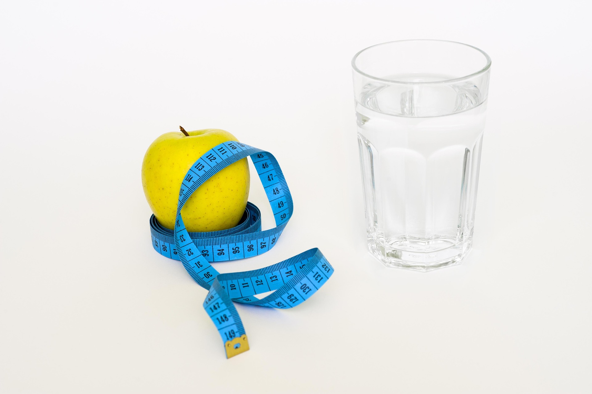

Sprawdź swoje dzienne zapotrzebowanie kaloryczne (BMR)
Kalkulator BMR (ang. Basal Metabolic Rate) służy do obliczenia podstawowej przemiany materii – czyli ilości kalorii, jaką Twoje ciało potrzebuje każdego dnia, aby podtrzymać podstawowe funkcje życiowe w stanie spoczynku (oddychanie, krążenie krwi, praca narządów).
Dlaczego warto korzystać z naszego kalkulatora?
To idealne narzędzie, jeśli chcesz:
- zacząć kontrolować swoją wagę,
- dobrać odpowiednią dietę,
- lepiej zrozumieć, ile energii naprawdę potrzebujesz.
Dzięki BMR możesz ustalić, ile kalorii powinieneś dostarczać organizmowi, by schudnąć, utrzymać wagę lub zbudować masę – zależnie od Twojego celu. Wystarczy wpisać kilka podstawowych danych, jak waga, wzrost, wiek, płeć oraz poziom aktywności fizycznej, a kalkulator resztę zrobi za Ciebie.